LLM 到 Agent
agent 不再只是生成文本，而是在 reasoning、planning、tool-use、memory、environment control 的循环中行动。memory 直接进入决策输入。
Mechanism Map
理解 agent memory 的关键，不是把上下文窗口拉长，而是看清三件事：记忆由什么承载、服务什么能力、如何在交互中形成、更新并被检索。
Agent 一旦进入多轮工具调用、长期对话或开放环境，就会遇到“过去的信息如何继续影响现在行动”的问题。Memory 机制就是为这个时间连续性服务。
Forms 说明 memory 放在哪里；Functions 说明 memory 支撑什么能力；Dynamics 说明 memory 如何被写入、维护和取回。三轴合起来才是完整机制。
真实系统优先从 token-level memory 做起，因为它可见、可改、可删除、可审计。Parametric 和 latent 更像能力内化或效率优化，不适合作为唯一治理层。
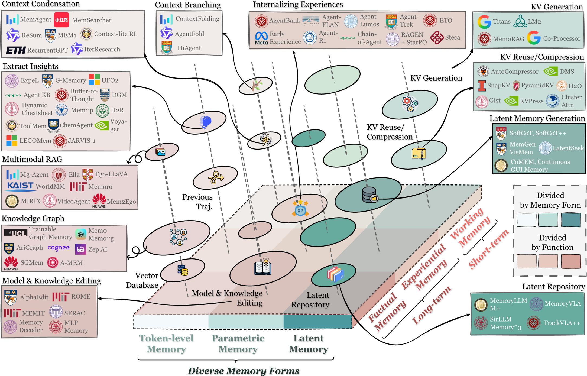
Why Memory
memory 的角色从“保存聊天历史”升级为让 agent 具备持续性、适应性和长期任务能力的基础机制。
agent 不再只是生成文本，而是在 reasoning、planning、tool-use、memory、environment control 的循环中行动。memory 直接进入决策输入。
上下文窗口只是当前可读 buffer；memory 需要选择性写入、长期维护、按任务检索，并能跨会话改变 agent 的后续行为。
用户事实、经验轨迹、当前工作状态、参数知识和内部 latent state 都可能叫 memory，但它们的更新方式和风险完全不同。
假设我有一个长期研究助理 agent。第一天我告诉它我的研究方向、偏好的实验设置和正在读的论文；第二天它帮我查资料并记录哪些路线失败了；第三天我让它继续写实验计划。一个没有 memory 的模型只能依赖我重新描述背景；一个只有长上下文的模型能读到当前塞进去的历史；一个真正有 memory 机制的 agent 会主动把用户偏好、项目状态、失败经验和当前计划分别沉淀下来，并在下一次行动前按任务取回。
普通 LLM 的输入通常是一次性 prompt：给它什么上下文，它就在这个上下文里回答。Agent 的问题更复杂，因为它会连续观察环境、调用工具、执行动作、接收反馈，还可能跨很多轮对话或很多个任务继续工作。如果每次都只看当前 prompt，agent 就会表现得像没有过去：重复问同样的问题、忘记用户偏好、无法复用失败经验，也很难保持长期目标一致。
所以 memory 机制要解决的是“状态管理”问题：哪些信息应该从历史里沉淀下来，沉淀成什么形式，什么时候更新，什么时候遗忘，什么时候拿出来影响当前决策。这也是它和单纯长上下文、RAG 或聊天记录的根本区别。
| 机制问题 | 对应模块 | 介绍时要讲清楚什么 |
|---|---|---|
| agent memory 如何定义 | 边界与接口 | 先划清它和 LLM memory、RAG、context engineering 的边界。 |
| memory 由什么承载 | Forms | token-level 是工程主线，parametric / latent 是补充形态。 |
| agent 为什么需要 memory | Functions | factual、experiential、working 分别对应知道什么、如何改进、当前在想什么。 |
| memory 如何运作 | Dynamics | formation、evolution、retrieval 构成动态闭环。 |
| 未来走向哪里 | Frontiers | 自主管理、RL、多模态、多 agent、world model、可信治理。 |
Memory Interface
把 memory 看成随时间变化的状态 Mt：它不是静态数据库，而是通过写入、维护、检索接入 agent 决策循环的状态层。
Mt 可以理解为 agent 此刻拥有的全部可用记忆状态。一次新交互产生 observation、tool output、reasoning trace 和 feedback；formation 先从这些材料中提取候选 memory，evolution 决定是否合并进旧 memory、替换旧版本或丢弃低价值内容。下一次行动前，retrieval 再根据当前任务取回少量有用信号，进入 prompt、planner 或 tool policy。
在 agent loop 里，memory 不是“回答完再存一下”的附加功能，而是在行动之前就进入策略输入。当前 observation 只告诉 agent 眼前发生了什么；memory signal 则告诉 agent 过去发生过什么、用户长期偏好是什么、类似任务以前怎么成功或失败、当前计划执行到哪一步。
这意味着 memory 的质量会直接影响 agent 行为。如果 retrieval 没触发，agent 可能忘记关键事实；如果取回了过时或冲突信息，agent 可能做出错误决策；如果 formation 过于粗糙，长期 memory 会变成低质量摘要堆。理解这个接口，是后面理解 forms、functions、dynamics 的基础。
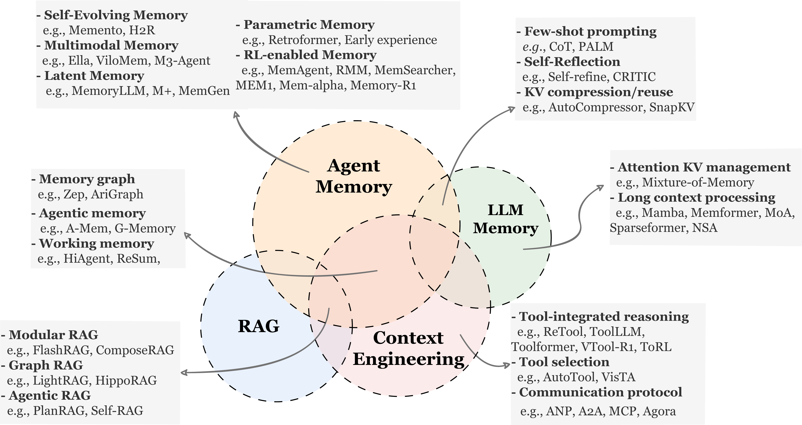
Token-Level Form
这里的 token 不是 tokenizer token，而是任何外部可见、可写入、可检索、可重组的离散 memory unit：文本片段、用户画像、轨迹、图节点、表格行、多模态条目。
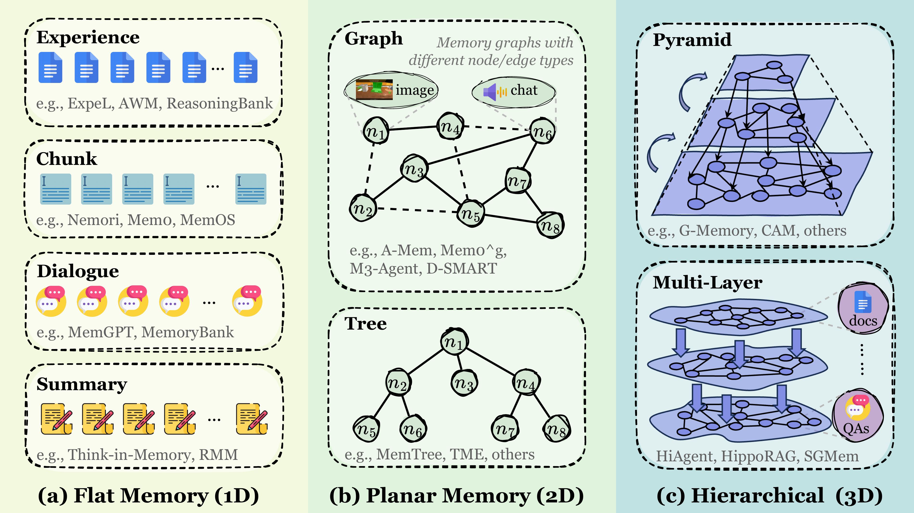
线性序列或独立条目。适合对话历史、用户 profile、经验池、vector entries、多模态片段。优点是简单可扩展，瓶颈是冗余和检索噪声。
单层图、树、表或关系结构。它从“存储”走向“组织”，适合实体关系、时间线、任务依赖、多跳推理。
跨粒度、跨抽象层组织 memory，例如 chunks、summaries、communities、episodic / semantic layers。适合长文档、多任务历史和全局摘要推理。
对真实 agent 系统来说，token-level memory 最容易落地，因为它是外部可见的。开发者可以看见它保存了什么，用户可以要求删除或修改，系统也可以给每条 memory 加时间、来源、置信度、权限和版本。这些治理能力在长期用户记忆、企业知识、代码仓库、金融或医疗场景里非常关键。
但 token-level memory 不是简单把所有历史塞进向量库。Flat memory 适合快速追加，但关系弱；Planar memory 用图、树、表表达关系，适合多跳推理；Hierarchical memory 再进一步，把原始片段、摘要、社区、主题和长期知识组织成多层结构。结构越强，推理能力越好，但维护成本也越高。
讲 token-level memory 时，可以把它拆成四个工程问题：memory unit 的粒度、metadata 的设计、索引结构的选择、以及取回后的使用方式。粒度太细会检索噪声大，粒度太粗会丢失细节；metadata 不足会让系统无法判断时间、来源和权限；索引只有向量相似度会丢掉关系；取回后直接拼接又会浪费上下文。
| 结构 | 典型用途 | 主要价值 | 主要风险 |
|---|---|---|---|
| Flat | 对话历史、用户偏好、经验轨迹、向量库 | 追加、删除和相似检索成本低 | 关系缺失，容易堆积噪声 |
| Planar | KG、timeline、persona graph、任务依赖图 | 支持结构化检索和关系推理 | 结构构建和纠错成本高 |
| Hierarchical | GraphRAG、分层摘要、长期知识组织 | 同时支持局部细节和全局推理 | 跨层检索路径和维护策略复杂 |
Beyond Tokens
parametric 和 latent memory 也能承载经验与状态，但它们更难解释、更新和治理。这里把它们作为 token memory 之外的补充机制。
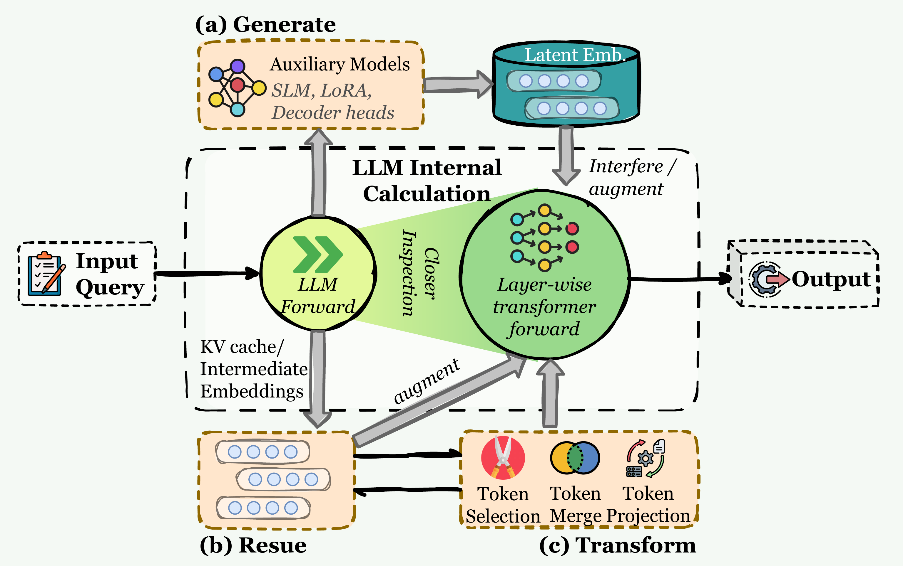
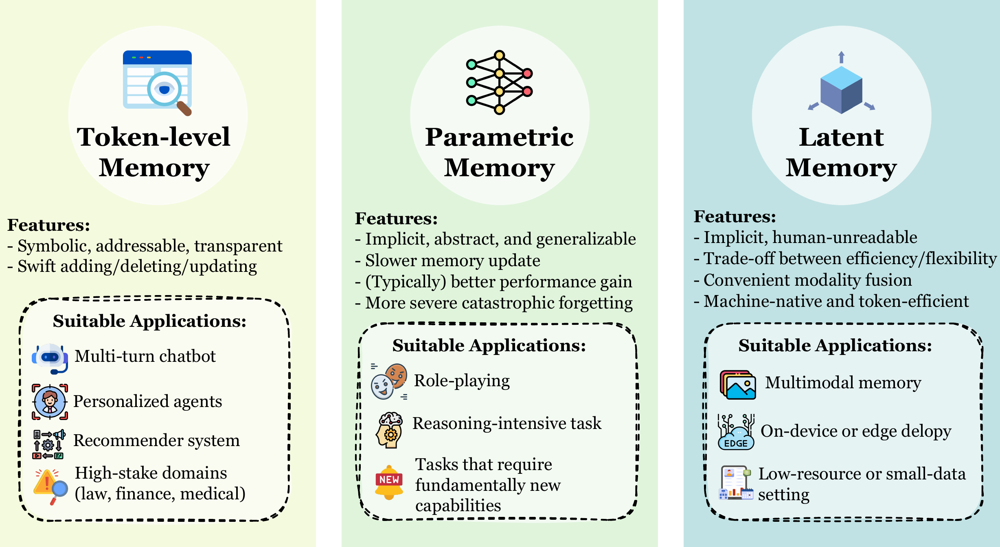
Parametric memory 把知识或经验写进模型参数、adapter 或 LoRA 这类可训练模块里。它的好处是推理时不必显式检索，模型可以像“已经学会”一样使用这些知识；坏处是更新慢、回滚难，错误写入可能影响很多相邻能力。因此它更适合稳定知识、长期风格、任务先验，而不适合频繁变化的用户事实。
Latent memory 则把信息保存在 KV cache、hidden states、latent embeddings 或 memory tokens 里。它更接近模型内部计算，适合长上下文压缩、多模态状态和高吞吐推理；但人很难直接看懂 latent state 保存了什么，也很难精确删除某条用户记忆。因此本 dashboard 把它们作为补充：它们很重要，但不应该替代 token-level memory 的治理层。
当信息足够稳定、需要变成模型默认能力，而且错误更新成本可控时才适合。比如领域术语、固定工具格式、长期风格或稳定技能。
当瓶颈是上下文长度、推理吞吐或多模态状态压缩时适合。它更像效率层，不像用户可直接管理的长期记忆层。
只要系统涉及用户可控、隐私删除、事实冲突、审计和可解释决策，就需要一层外部可读写的 token memory 做治理接口。
| Memory form | 存在哪里 | 优势 | 风险 |
|---|---|---|---|
| Token-level | 外部文本、向量库、图、表、轨迹 | 可解释、可编辑、易检索、可审计 | 检索噪声、冗余积累、结构维护成本 |
| Parametric | 模型参数、adapter、LoRA、辅助 LM | 泛化强，推理时不需要显式检索 | 更新慢、难回滚，可能遗忘或误伤旧知识 |
| Latent | KV cache、hidden states、latent embeddings、memory tokens | 高压缩、高吞吐，适合长上下文和多模态 | 不可解释，难以编辑、审计和验证 |
Memory Functions
同一种 memory form 可以服务不同功能。对 agent 来说，记忆至少要回答三类问题：知道什么、如何改进、当前在想什么。
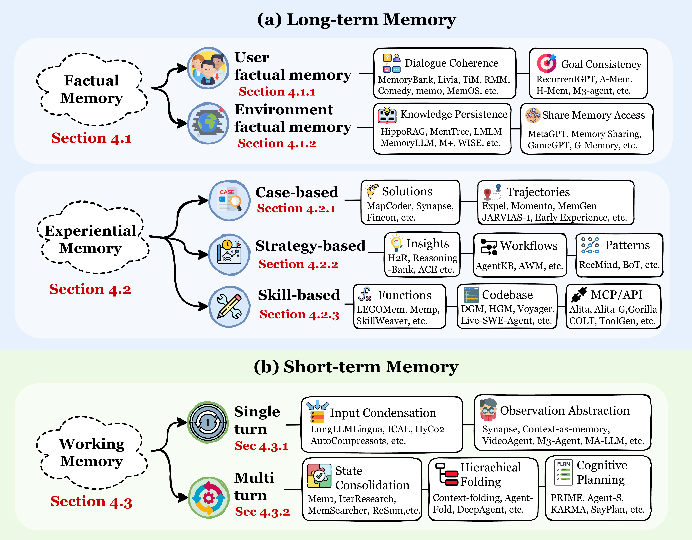
回答 agent 知道什么。保存用户事实、环境状态、历史事件和外部知识，支撑 consistency、coherence、adaptability。
回答 agent 如何改进。保存过去案例、成功 / 失败轨迹、策略、workflow 和可执行技能。
回答 agent 当前在想什么。它是当前任务中的 active workspace，不只是被动 context window。
Factual memory 让 agent 在事实层面持续：它记得用户是谁、环境里有什么、之前确认过哪些约束，因此能保持一致性和个性化。Experiential memory 让 agent 在能力层面持续：它从过去任务的成功和失败中抽象案例、策略和技能，下一次遇到相似问题时不必从零探索。Working memory 让 agent 在当前任务内部持续：它维护当前计划、子目标、临时假设和中间结果，防止长程任务中目标漂移。
这三类功能不是三个固定数据库，而是同一套 memory 机制在不同用途下的角色。比如 token-level memory 既可以存用户事实，也可以存反思总结，还可以存当前任务状态；关键是系统必须知道这条 memory 的用途，否则 retrieval 时就会把“长期事实”“经验策略”和“临时草稿”混在一起。
比如 agent 帮用户完成一次代码调试。它可以把“用户偏好 pytest 而不是 unittest”写成 factual memory；把“这类错误通常先检查依赖版本”写成 experiential memory；把“当前已经定位到配置文件，下一步要改 CI 脚本”保存在 working memory。三者都来自同一次交互，但用途完全不同，生命周期也不同。
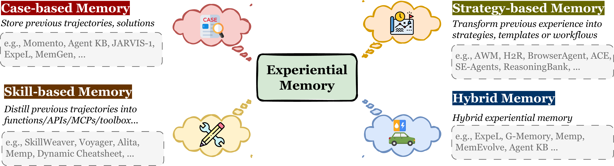
| Function | 问题 | Token-level 例子 |
|---|---|---|
| Factual | What does the agent know? | 用户画像、事实条目、环境 KG、长期对话摘要。 |
| Experiential | How does the agent improve? | case bank、reflection、strategy notes、可复用工具脚本。 |
| Working | What is the agent thinking about now? | 任务状态、scratchpad、subgoal tree、当前计划摘要。 |
Memory Dynamics
真正的 agent memory system 不是 append-only vector store，而是一个持续形成、治理、读取并反馈到行为中的动态闭环。
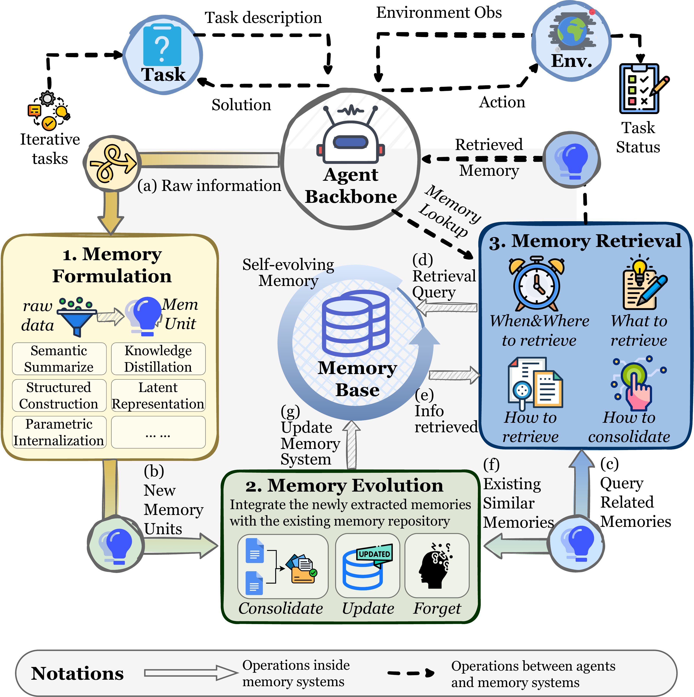
从 raw interaction、reasoning trace、tool output、environment feedback 中抽取更高信息密度的 memory units。
把新旧 memory 融合、修正、遗忘、重组，避免长期系统变成噪声堆积。
在合适时刻构造 task-aware query，从合适 memory store 取回对当前推理有用的信息。
一个长期 agent 最容易出问题的地方，不是没有存储，而是 memory 治理失败。Formation 如果太宽松，系统会把大量无关聊天、错误推理和低价值工具输出都写入；如果太严格，又会漏掉未来关键事实。Evolution 如果缺失，memory 会越来越冗余、冲突、过时；Retrieval 如果只做 top-k 相似度，取回的内容可能相关但不适合当前任务阶段。
因此，agent memory 的核心是闭环：交互产生原始材料，formation 抽取候选记忆，evolution 把候选记忆和已有记忆整合，retrieval 在行动前取回相关信息，行动结果又回到下一轮 formation。这个闭环跑得越久，系统越需要处理冲突、时间有效性、隐私、遗忘和可解释性。
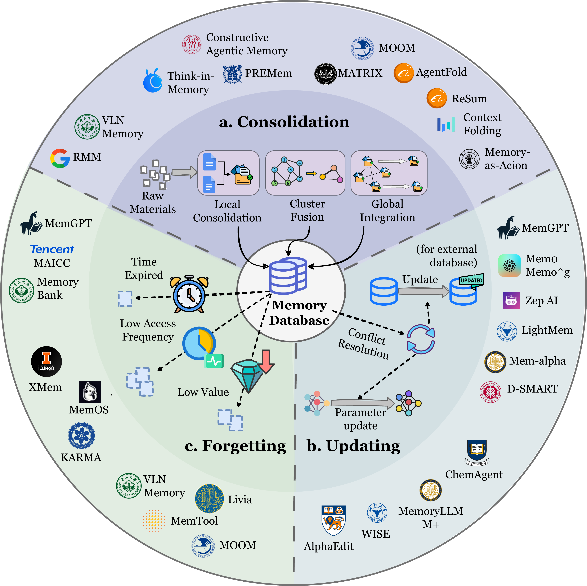
检索流程不依赖论文页面截图展示。实际讲解时重点看四步：什么时候检索、用什么 query 检索、采用什么策略检索，以及检索后如何过滤、重排和压缩。
如果每次交互都直接追加到向量库，短期看起来系统“记住了更多”，长期会出现四类问题：同一事实有多个版本，失败推理被当成经验，过时信息仍被召回，低价值片段挤占检索结果。Dynamics 的作用就是把 memory 从日志堆变成可维护状态。
Representative Works
这里把代表系统放到 Form、Function、Dynamics 三条轴上。讲解时不用逐个列论文名，而是用这些表判断一个方法是在做存储载体、能力角色，还是生命周期管理。
一个 memory 系统通常会同时落在三张表里：它可能用 token-level graph 存储用户和环境事实，用 experiential memory 保存失败轨迹，再通过 summarization、updating 和 retrieval pipeline 维护生命周期。汇报时先定位这三个答案，听众就能快速理解它和普通 RAG、长上下文、模型微调的差别。
这一页不需要逐项介绍所有方法。更有效的讲法是：先选一个系统，问它的 memory carrier 是 flat text、graph、hierarchy、parameter 还是 latent state；再问它主要提升的是用户事实一致性、经验复用还是当前任务状态；最后问它有没有处理 formation、evolution 和 retrieval。如果三个问题都能回答清楚，就能判断它是一个完整 agent memory system，还是只覆盖其中一个组件。
Form 决定 memory 的可见性、可编辑性和部署门槛。token-level memory 最适合产品和 agent workflow 起步；parametric / latent memory 更接近模型内部能力或推理效率优化，适合稳定知识内化、高压缩和底层系统优化。
| 方向 | 主要问题 | 代表工作 | 讲解重点 |
|---|---|---|---|
| Token-level flat memory | 把对话、用户事实、摘要、profile、经验条目作为可检索文本存储。 | MemGPT、MemoryBank、Mem0、RMM、MIRIX、LightMem、ComoRAG | 最容易接入通用 LLM；质量取决于写入粒度、检索策略和后处理。 |
| Token-level experiential memory | 从 episode、成功/失败轨迹中抽取可复用经验。 | Reflexion、ExpeL、AgentKB、ReasoningBank、Voyager、LEGOMem、ToolMem | 重点从“记住事实”转向“复用经验”，支撑 self-evolving agent。 |
| Token-level multimodal / embodied memory | 把视频、第一视角观察、空间状态、地图和物体状态转成可检索记忆。 | Ego-LLaVA、MovieChat、VideoAgent、KARMA、Embodied VideoAgent、Mem2Ego、WorldMM | 难点不是存图像，而是把视觉观察压缩成可检索、可更新的状态。 |
| Token-level structured / graph memory | 用图、树、层级结构表达实体关系、事件关系、时间关系和多跳线索。 | A-MEM、MemTree、GraphRAG、Zep、HippoRAG、AriGraph、G-Memory、MAGMA | 适合多跳推理、长期知识维护和可解释检索；工程成本高于 flat store。 |
| Parametric internal memory | 把知识、人格、经验或任务先验写入模型原始参数。 | StreamingLLM、LMLM、HierMemLM、Agent-Founder、SELF-PARAM、MEND、AlphaEdit | 部署时不需要外部 store，但更新成本高，容易遗忘或污染原能力。 |
| Parametric external memory | 用 adapter、LoRA、辅助网络或小模型承载记忆。 | MLP-Memory、K-Adapter、WISE、ELDER、T-Patcher、Memory Decoder、MemLoRA、Retroformer | 比直接改参数更模块化，但通常仍绑定具体模型和训练管线。 |
| Latent memory generation | 生成 soft token、summary vector、latent slot 或 persistent token。 | Gist、AutoCompressor、MemoRAG、MemoryLLM、M+、Titans、MemGen、CoMEM | 优势是压缩率和推理效率；短板是用户不可直接读写、解释性弱。 |
| Latent memory reuse / transform | 复用或压缩 KV cache、hidden state、prefix state 等内部计算状态。 | Memorizing Transformers、SirLLM、Memory3、FOT、LONGMEM、SnapKV、PyramidKV、H2O、R3Mem | 更接近底层推理优化，需要控制模型或推理框架。 |
Function 让系统设计从“我要存什么”变成“我要让 agent 具备什么长期能力”。事实记忆负责一致性，经验记忆负责改进，工作记忆负责当前任务状态；三者的写入、检索和评测方式都不同。
| 功能方向 | 主要问题 | 代表工作 | 讲解重点 |
|---|---|---|---|
| Factual：用户事实与对话一致性 | 长期记住用户身份、偏好、历史承诺和互动事实。 | MemGPT、TiM、MemoryBank、AI Persona、Mem0、RMM、EMem、Memoria | 产品型 agent 最先需要；重点是事实更新、冲突处理和隐私。 |
| Factual：目标一致性与任务约束 | 让 agent 在长程任务中持续遵守目标、约束和历史决策。 | RecurrentGPT、Memolet、MemGuide、SGMem、A-MEM、M3-Agent、EverMemOS | 对 web、office、research agent 很关键，因为早期约束会持续影响后续动作。 |
| Factual：环境知识持久化 | 维护外部世界、文档状态、资源状态和跨 agent 共享事实。 | AriGraph、HippoRAG、Zep、MemTree、CAM、MemAct、WISE、MemoryLLM、M+ | 更接近 agent 的可更新世界模型，通常需要结构化存储或知识图谱。 |
| Experiential：case-based | 保存 solution、trajectory 或 episode，用作示例和 replay。 | ExpeL、Synapse、MapCoder、JARVIS-1、MemGen、DreamGym、MemRL | 证据完整，但上下文占用和检索噪声较大。 |
| Experiential：strategy-based | 把历史经验抽象成 insight、pattern、workflow 或 rule。 | Reflexion、Buffer of Thoughts、AWM、H2R、ReasoningBank、AgentKB、Dynamic Cheatsheet、MemEvolve | 这是从“保存经历”到“形成方法论”的关键一步。 |
| Experiential：skill-based | 把经验编译成可执行代码、函数、API 或工具能力。 | CREATOR、Gorilla、ToolLLM、Voyager、LEGOMem、Darwin Godel Machine、SkillWeaver、Alita、LearnAct | 更接近 procedural memory，适合工具调用、代码、web 和 embodied control。 |
| Working：input condensation | 在单轮推理里压缩长上下文或冗余输入。 | Gist、ICAE、AutoCompressors、LLMLingua、CompAct、HyCo2、R3Mem | 解决当前上下文太长的问题，不等同于长期记忆。 |
| Working：observation abstraction | 把 DOM、视频、GUI、环境观察抽象成低维状态。 | Synapse、VideoAgent、MA-LMM、Context as Memory | 对交互环境关键，因为原始 observation 往往过长、过噪。 |
| Working：multi-turn state consolidation | 在多轮任务中持续压缩、继承和更新中间状态。 | MEM1、MemGen、MemAgent、ReSum、MemSearcher、IterResearch、SUPO、AgeMem | 连接 short-term working memory 和 long-term experiential memory。 |
| Working：hierarchical folding / planning | 用层级折叠、目标图或规划结构管理长程任务状态。 | HiAgent、Context-Folding、AgentFold、DeepAgent、SayPlan、KARMA、Agent-S、PRIME | 适合 deep research、web automation、robotics 等长程任务。 |
Dynamics 关注 memory 进入系统之后发生什么。这里的代表工作可以帮助判断一个方案是在做 formation、consolidation、structured construction，还是把经验进一步压缩成 latent 或 parametric 能力。
| 生命周期方向 | 主要问题 | 代表工作 | 讲解重点 |
|---|---|---|---|
| Semantic summarization | 把原始历史压缩成 textual summary、session summary 或 multimodal summary。 | MemGPT、Mem0、Mem1、MemAgent、MemoryBank、ReadAgent、LightMem、DeepSeek-OCR、LangRepo | 最常见的 formation 方法，适合作为长期记忆写入前的第一层压缩。 |
| Knowledge distillation | 从对话、轨迹、视觉观察中抽取 intent、insight、workflow 或 procedural knowledge。 | TiM、RMM、MemGuide、M3-Agent、AWM、Memp、ExpeL、R2D2、H2R、Memory-R1、Mem-alpha | 目标不是保存原文，而是形成更可迁移的知识。 |
| Structured construction | 把 memory 构造成 KG、tree、hierarchical JSON、networked notes 或多层 graph。 | KGT、Mem0g、D-SMART、GraphRAG、AriGraph、Zep、RAPTOR、MemTree、H-MEM、A-MEM、G-Memory | 强化可解释、多跳和跨 session 查询，但需要维护 schema 和更新策略。 |
| Latent representation | 把 memory 编码成 latent vector、latent token、multimodal embedding 或 KV-like state。 | MemoryLLM、M+、MemGen、ESR、CoMEM、Mem2Ego、KARMA | 适合高压缩和高频调用，但更难人工审计。 |
| Parametric internalization | 通过参数更新、model editing、LoRA 或工具调用 SFT 把外部经验内化进模型能力。 | MEND、ROME、MEMIT、CoLoR、ToolFormer | 更像把 memory 变成 competence，适合稳定知识或能力，不适合频繁变化的个人记忆。 |
一个 memory claim 要说明自己评测的是什么能力。用户画像、长上下文定位、持续学习、跨 episode 自我改进、web/tool 长程状态和 hallucination 风险，对应的 benchmark 不一样；开源框架也要区分完整 memory system 和普通 retrieval backend。
LoCoMo、PersonaMem、PerLTQA、PrefEval、DialSim。适合评估长期对话一致性、用户画像维护和个性化记忆。
LongMemEval、RULER、BABILong、MM-Needle、LongBench。重点看系统能否在长历史中定位、保持和使用信息。
MemoryBench、LifelongAgentBench、StreamBench、MemoryAgentBench、Evo-Memory、StoryBench。关注跨 episode 积累和策略改进。
WebChoreArena、MT-Mind2Web、WebArena、ToolBench、SWE-Bench Verified。适合看 agent 是否保持约束、证据和中间状态。
MemGPT、MemoryOS、MemOS、MemU、LangMem、ReMe、AgentMemory、MemEngine。更接近 memory 操作接口和生命周期管理。
Mem0、Zep、Cognee、Memobase、Pinecone、Chroma、Weaviate、SuperMemory。适合作为事实存储、实体关系和检索基础设施。
Frontiers
agent memory 会从手工设计、检索中心、外接模块，走向可学习、可生成、可自治管理、跨模态和可信治理。
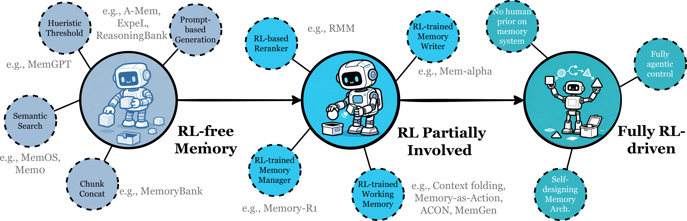
memory usage 从取出原片段走向按任务重组、抽象和生成。
agent 自主决定 add、update、delete、retrieve，而不是依赖固定规则。
memory writer、retriever、compressor 和架构控制可能被长时域奖励优化。
从 text memory 走向视觉、音频、视频、传感器和行动反馈的统一记忆。
早期 memory 系统往往是工程规则：固定 chunk、固定摘要 prompt、固定向量检索、固定遗忘阈值。这种方式容易实现，但在开放环境中很难泛化。未来更关键的是让 agent 自己学会 memory management：什么时候写入、写入什么粒度、是否更新旧记忆、什么时候触发检索、取回后如何压缩和验证。
这也是 RL、多模态、多 agent、world model 和 trustworthy memory 会被放在一起讨论的原因。它们都在把 memory 从“外部资料库”推向“agent 认知控制层”：memory 不只服务语言回答，还服务团队协作、长期世界状态、跨模态感知、隐私治理和可解释决策。
当 memory 只是外部文本库时，系统可以靠人工规则管理；但当 agent 要在开放环境里长期行动，memory 操作本身就变成策略选择：写错会污染未来，忘错会丢掉关键经验，检索错会导致错误行动。RL 关心长期奖励，多模态和 world model 关心环境连续状态，多 agent 关心共享和冲突，trustworthy memory 关心用户能否理解、控制和删除。这些问题本质上都在问：长期记忆怎样才能被安全地交给 agent 自己管理。
多 agent 需要 team-level memory，同时处理权限、角色、冲突和污染。
memory 从 data caching 走向维护可交互世界的连续状态。
隐私、可解释、抗幻觉、版本和审计会成为基础设施要求。
从 verbatim retrieval 走向 constructive reconstruction 和 offline consolidation。
我的研究设想
把 agent memory 用在长篇创作里：系统不从作者全知视角读取全文，而是按故事内时间线和角色可见性构造受限记忆，让角色 agent 只能知道它在当时应该知道的信息。
在长篇创作过程中，后台自动把已完成文本转化为按故事内时间线组织的叙事记忆系统。作者可以在任意情节点打开某个角色 agent，这个 agent 只能访问过去发生、且按剧情设定它有理由知道的信息，不能偷看未来剧情或其他角色秘密。
这和普通写作助手的区别很明确：普通助手常把全文当上下文，用全知视角续写；Diegetic Memory Agents 把“谁在什么时候知道什么”作为检索约束，用受限视角做创意推演和叙事审计。
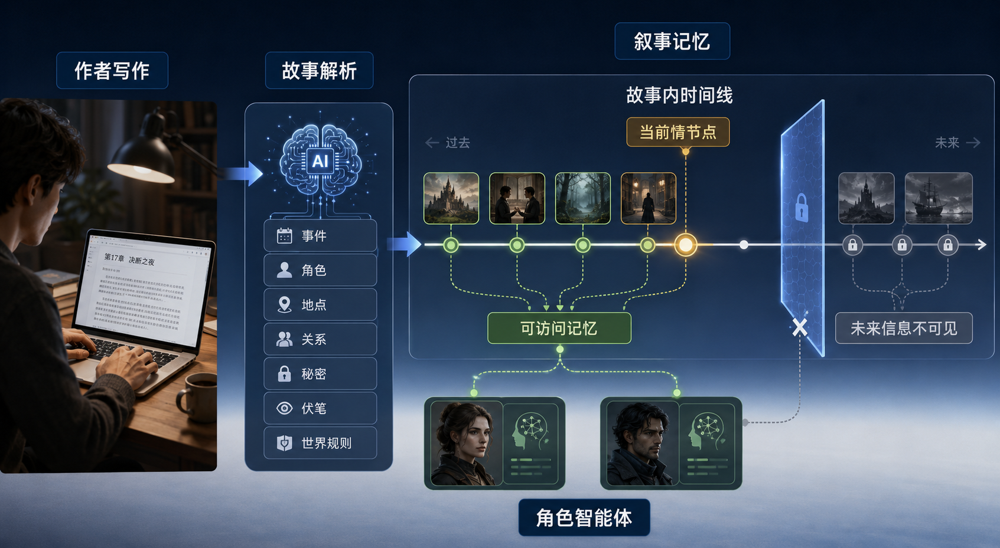
作者写作顺序、文本章节顺序和故事内部发生顺序经常不一致。这个想法的关键是把 memory index 从“文档位置”改成“故事内时间 + 角色视角”。当作者问某个角色下一步会怎么做时，系统先锁定故事时间点，再过滤出该角色当时可见的事实、经历、误解、秘密和情绪状态。
memory 按 diegetic timeline 组织，而不是按写作顺序或文本顺序组织。这样可以处理倒叙、插叙、多线叙事和未来信息隔离。
不同角色拥有不同的已知事实、误解、秘密、目标和情绪状态。agent 的回答必须先通过角色知识边界过滤。
推演模式服务创意生成，审计模式服务一致性检查。前者使用受限角色视角，后者使用作者全局视角。
秘密、伏笔、承诺、世界规则和角色状态都需要版本化管理，避免未回收、提前泄露或前后矛盾。
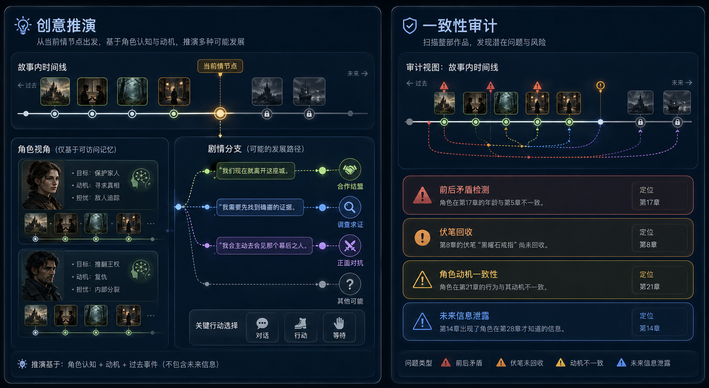
作者选择一个情节点和一个角色，系统只加载该角色当时可见的记忆，模拟它下一步可能的行动、对话、误判或冲突升级。这不是泛泛续写，而是受角色认知状态约束的分支推演。
作者写完后文后，系统用全局视角扫描时间线，检查角色是否提前知道未来信息、伏笔是否未回收、动机转变是否缺少中间事件、世界规则是否前后冲突。
系统不替作者决定剧情，而是给出受限视角下的可能性和全局视角下的风险提示。它更像 narrative memory sandbox，而不是自动续写器。
最有价值的问题是 retrieval 和 visibility control：检索时必须先判断时间可见性、角色知识边界、秘密状态和当前任务视角，而不是直接做 top-k 相似度。
后台首先做故事解析，从正文中抽取事件、角色、地点、物品、承诺、秘密、伏笔、冲突和世界规则。然后构建叙事时间线，把事件按故事内部发生顺序排列，而不是按章节或写作顺序排列。每个角色维护自己的记忆状态，包括已知事实、误解、目标、情绪、关系变化和行动承诺。
当作者进入某个情节点时，可见性控制模块会过滤 memory：未来事件被锁定，其他角色私有信息被隔离，只有当前角色在当时合理可知的内容进入推演。审计模式则切换到全局视角，反向检查叙事一致性和信息泄露。
| Agent Memory 维度 | 在这个创意里的对应 | 为什么重要 |
|---|---|---|
| Forms | token-level structured memory：事件时间线、角色图、事件图、秘密索引、伏笔索引、世界规则表。 | 长篇叙事需要可解释结构，作者要能看到、修改、锁定或删除每条叙事记忆。 |
| Functions | factual memory 维护剧情事实，experiential memory 表示角色行为模式，working memory 支持当前情节点推演。 | 同一段剧情既是世界事实，也是角色经验，还可能成为当前推演的临时状态。 |
| Dynamics | formation 从正文抽取记忆，evolution 处理冲突和伏笔状态，retrieval 按时间与角色视角受限检索。 | 核心创新不是存储，而是“该角色此刻能访问什么”的动态治理。 |
这个想法可以从系统原型走向研究问题：如何稳定抽取自由文本中的事件时间线，如何判断角色是否知道某个事实，如何表示秘密和误解，如何检测未来信息泄露，以及如何评价受限推演的质量。它和 agent memory 综述的连接点很清楚：这里把 token-level structured memory、retrieval timing、query construction、visibility control 和 memory governance 放到了一个具体创作场景中。
Closing
parametric 和 latent memory 代表更深层的模型内化与高效表示，但若目标是构建可维护、可审计、可迭代的 agent 系统，token-level memory 仍然是最清晰的主线。
memory 的核心不在保存更多内容，而在选择哪些内容值得形成、如何治理、何时取回。
RAG 强调检索增强生成；agent memory 还强调长期交互、动态更新和行为连续性。
外部可见、可编辑、可审计，使 token-level memory 更适合真实系统工程。
memory management 会逐渐成为 agent 自身可学习、可追踪、可优化的行动空间。
第一，agent memory 的目标不是扩大 prompt，而是让过去的信息以受控方式影响未来行动。第二，当前最可落地的主线是 token-level memory，因为它能承载事实、经验和工作状态，也能支持审计、删除和冲突处理。第三，真正决定长期系统质量的是 dynamics：formation 决定写入质量，evolution 决定 memory base 是否健康，retrieval 决定当前行动是否拿到正确上下文。
推荐讲解节奏：先用三轴框架建立整体地图，再重点展开 token-level memory 和 lifecycle，最后说明 RL、自主管理和可信治理为什么会成为下一阶段关键问题。
Quick Tree
这一页把完整讲解压成一棵知识树：先看 memory 的定义和边界，再看 Forms、Functions、Dynamics，最后看未来演进。